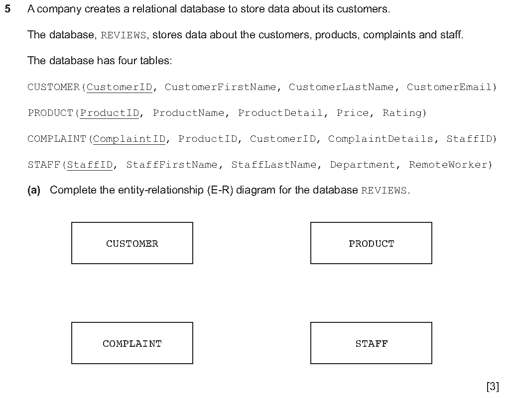
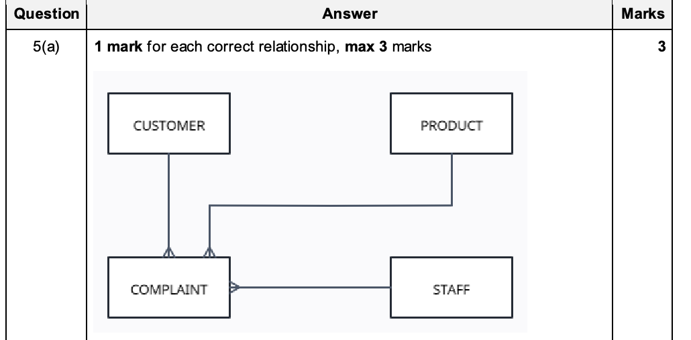

Databases · Concept 01
Draw a design and test it with real events
Observe
Look, then discuss
Can the design record two copies of one title and repeated loans of the same copy?
The catalogue contains Book 11, Atlas. The library owns Copy 101 and Copy 102 of that title. Asha borrows Copy 101, returns it and borrows it again later. Decide which facts must remain separate.
Explain
Explanation · 1 / 4
Assign facts to their owner
Book stores title-level facts, such as BookID and Title. Copy stores a physical item’s CopyID and BookID. Member stores MemberID and MemberName. Loan stores LoanID, MemberID, CopyID and the event’s dates. A borrowing date belongs to an event, not permanently to a member or title.
| Entity | Attributes in this design |
|---|---|
| Book | BookID PK; Title |
| Copy | CopyID PK; BookID FK |
| Member | MemberID PK; MemberName |
| Loan | LoanID PK; MemberID FK; CopyID FK; BorrowDate |
Explanation · 2 / 4
Connect the entities from the rules
One Book may have many Copies; each Copy describes one Book. One Copy may take part in many Loans over time; each Loan names one Copy. One Member may take part in many Loans; each Loan names one Member. State the meaning of each line and mark keys in the boxes.
Explanation · 3 / 4
Read the diagram as a structure
An ER diagram documents entities, attributes, keys and relationships. A line describes an association rather than the next step in a process. Draw a notation legend showing the one and many ends, and include optional participation if the chosen notation represents it.
Explanation · 4 / 4
Test the model before implementation
A new member with no loans must fit. Two copies of Atlas must fit without duplicating its title record. Two later loans of Copy 101 need different LoanIDs. Preventing overlapping active loans for one copy is an additional business constraint, not something the cardinality line alone guarantees.
Work together
Trace two borrowing events
Book (11, Atlas), Copy (101, 11), Member (1, Asha). Asha borrows Copy 101 on two separate dates.
Work together · 1 / 2
Add the event records
Loan 201 contains MemberID 1, CopyID 101 and the first date. Loan 206 contains MemberID 1, CopyID 101 and the later date. Both references point to the existing parent records.
Work together · 2 / 2
Recover the description
From Loan 206 follow MemberID 1 to Asha. Follow CopyID 101 to BookID 11, then to Atlas. This is a design trace, not a request to write a three-table AS SQL query.
A usable ER design represents every allowed event without overwriting another fact.
Experiment
Use the listed relationship rules to check the one and many ends. Explain how each result would be represented in your ER diagram, then test the repeated-copy borrowing example against your completed design.
Read the rule in both directions
Predict: Choose the maximum relationship from the left entity to the right entity. The words “zero” and “exactly” describe participation as well.
Predict what will change before using an action.
Check
Explain it yourself · Teacher-written
Why should Title be stored with Book instead of copied into every Loan? Where does BorrowDate belong?
Check your reasoning
Title describes the book and would be repeated across its copies and loans if copied into each event. BorrowDate describes a particular Loan and can differ when the same member borrows the same copy again.
Past paper
Attempt the past-paper questions · 3 marks
1 original question · 1 selected part · 3 marks
Suggested independent working time: 3–6 minutes (teacher estimate).
Answer the original questions first. Open guidance, a teacher solution or the official mark scheme when needed. Only the named parts are assigned; extracts also retain their required shared context.
Original question · Cambridge 9618/13
1. Connect the complaint database
Cambridge 9618/13 · October/November 2025 · 5(a) · 3 marks
Selected parts: 5(a) [3].

Hint — reading the question
Trace each foreign key in COMPLAINT to its parent table. Read each relationship in both directions.
Reasoning and model answer — teacher-written
CUSTOMER, PRODUCT and STAFF each have a one-to-many relationship with COMPLAINT. Each complaint identifies one customer, one product and one member of staff.
Official mark scheme

Why this earns marks — teacher explanation
One mark for each of the three correct relationships.
Common mistakes — teacher analysis
Cambridge past-paper access page ↗ · Source references and page numbers are shown with each extract. © Cambridge University Press & Assessment / UCLES.
Connect
Keep this idea
Derive the entities and links from business rules, then test the design with new and repeated events.
Now examine an existing order table and improve its structure without losing its facts.
Check a common misunderstanding
A correct cardinality diagram does not, by itself, enforce every timing or business restriction.
Learning goals
- Use an entity-relationship diagram to document a database design.